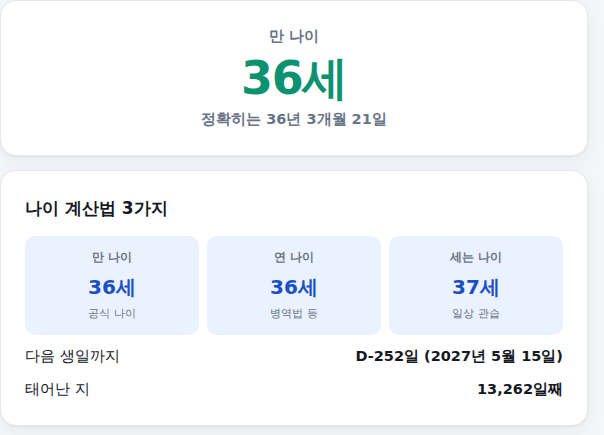

2023년 "만 나이 통일법" 시행 이후로 내 나이가 정확히 몇 살인지 헷갈리는 분들이 많습니다. 생년월일만 넣으면 만 나이·연 나이·세는 나이를 한 번에 계산해주는 계산기를 만들었습니다. 쓰는 법은 아래와 같습니다.
-
생년월일과 기준일 입력
생년월일을 연도·월·일 드롭다운에서 순서대로 골라주세요. 기준일은 오늘 날짜가 자동으로 들어가 있는데, 특정 날짜(예: 입사일, 시험 응시일) 기준으로 나이가 궁금하다면 직접 바꿔서 골라보세요.
생년월일·기준일 입력 화면
-
결과 확인 — 나이 계산법 3가지
맨 위에 만 나이가 크게 나오고, 아래 카드에서 만 나이·연 나이·세는 나이를 한눈에 비교할 수 있습니다. 다음 생일까지 며칠 남았는지, 태어난 지 며칠째인지도 함께 확인할 수 있습니다.

결과 화면
세 가지 나이, 언제 쓰이나요
만 나이는 2023년 6월 28일부터 법적·행정적 나이의 원칙적인 기준입니다. 계약서 나이, 각종 신청 자격, 정년 등 대부분의 공식적인 상황에서 사용됩니다. 연 나이는 현재 연도에서 출생 연도를 빼는 방식으로, 병역법(입영 연령)이나 청소년보호법(술·담배 구매 가능 연령)처럼 취지상 생일과 무관하게 "같은 학년·같은 해 출생자"를 동일하게 취급해야 하는 법률에서 여전히 사용됩니다. 세는 나이는 법적 효력이 없는 옛 관습이지만, 일상 대화에서 "몇 살이세요?"라고 물을 때 여전히 많이 쓰입니다.
다음 생일까지 며칠인지도 함께 알려드립니다
결과 화면에서 오늘(또는 입력한 기준일)부터 다음 생일까지 남은 날짜를 D-day로 보여줍니다. 생일이 기준일과 같은 날이면 "생일입니다"라고 바로 표시됩니다.
계산은 참고용이며 법률 자문이 아닙니다. 기준: 만 나이 통일법(2023.6.28 시행), 2026년 기준 정리.